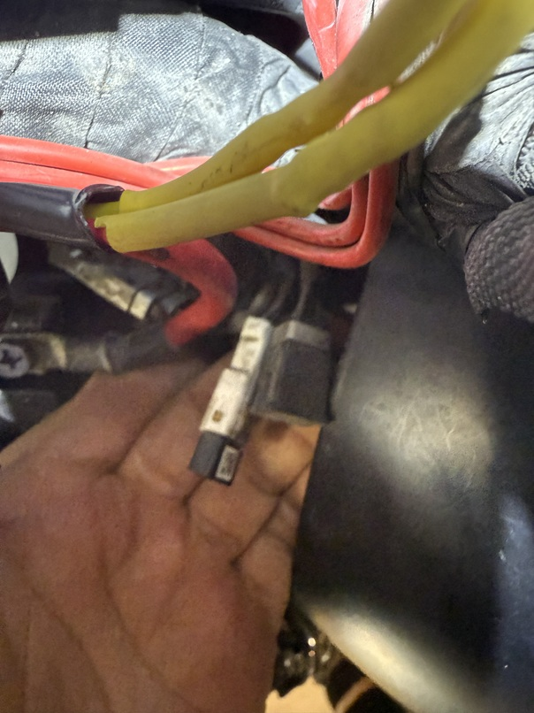
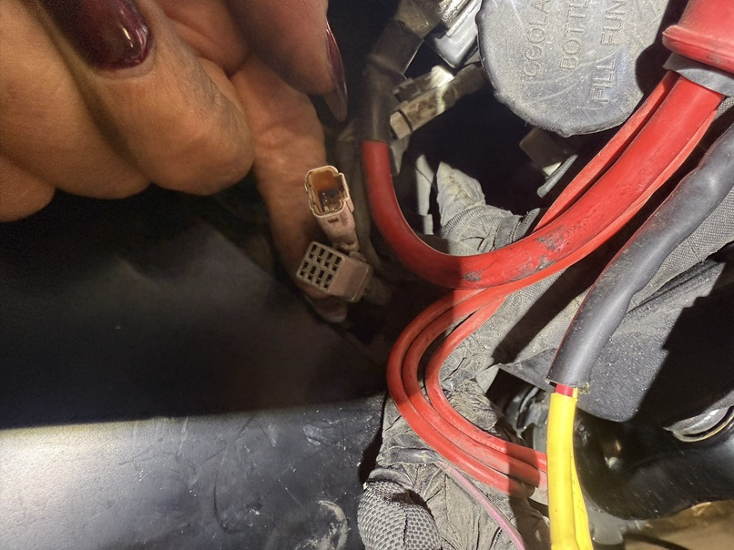
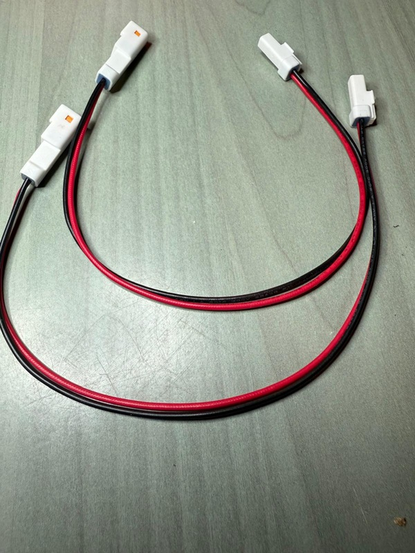
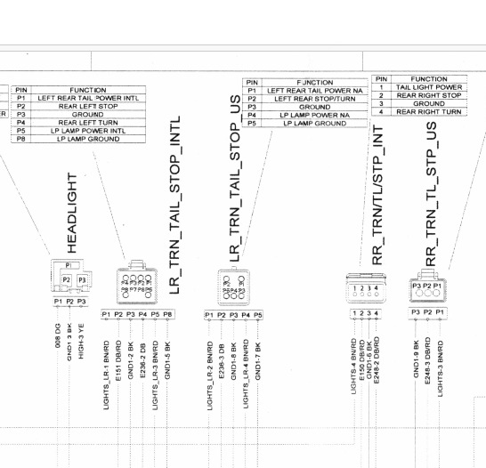
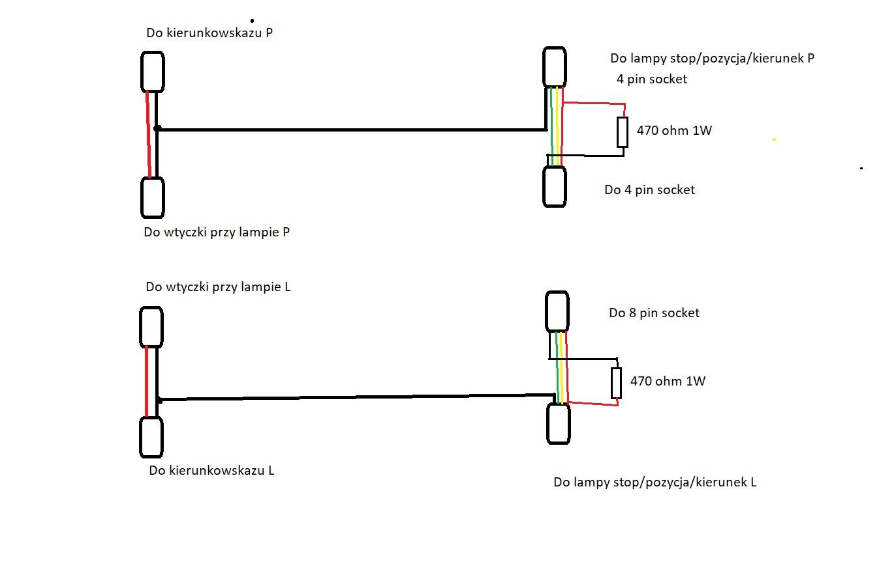

Wtyczki w fabrycznej instalacji
W instalacji powinny znajdować się europejskie wtyczki 4-pin i 8-pin, zamknięte zaślepkami.

Po zdjęciu zaślepek: we wtyczce 8-pinowej wykorzystanych jest tylko 6 pinów.

Przedłużki zamiast cięcia przewodów
Żeby nie ciąć oryginalnej instalacji, posłużyłam się przedłużkami z AliExpress. Potrzebne są: jedna przedłużka 8-pin, jedna 4-pin oraz dwie 2-pin.

Rozkład pinów
Na poniższym fragmencie schematu lewa wtyczka ma taki sam rozkład pinów jak prawa, a dodatkowo dwa piny (5 i 8) przeznaczone do oświetlenia tablicy rejestracyjnej.
| Pin | Funkcja |
|---|---|
| 1 | Światło pozycyjne (+12 V) |
| 2 | Światło hamowania — sterowanie plusem |
| 3 | Masa |
| 4 | Kierunkowskaz — sterowanie masą |

Podłączenie kierunkowskazów
Za pomocą przedłużek 2-pinowych pobrałam sygnał z przednich kierunkowskazów do sterowania tylnymi.
Pin 4 tylnych kierunkowskazów od strony ECU jest obciążony rezystorami 470 Ω podłączonymi do plusa (pinu 1), aby przerywacz nie sygnalizował awarii żarówki.

NA KONIEC
A może wersja EU?
Lepszym rozwiązaniem byłoby przeprogramowanie komputera na wersję europejską, ale zabrakło mi czasu…